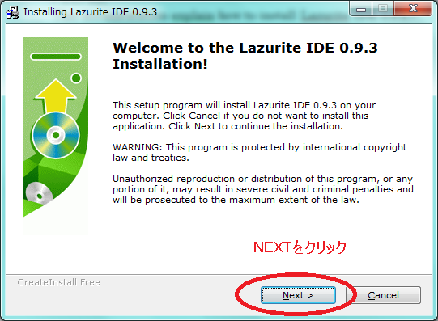
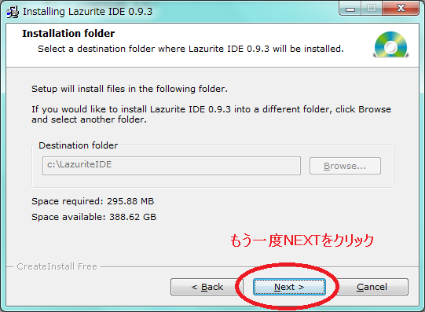
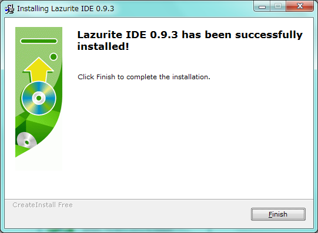

Lazurite Sub-GHz Rev.1をお持ちの方用のIDEです。
概要
Lazurite IDEのインストール方法
1. setup.exeを実行してください
下記リンクにあるLazurite IDEをダウンロードしてください。
http://www.lapis-semi.com/lazurite-jp/download_subghz_rev1.html
2. 次へをクリックしてください

3. もう一度、次へをクリックしてください。
インストール先のディレクトリは C:\LazuriteIDEです。

4. Finishボタンを押しせばインストールが完了します。
USBドライバのインストール
FTDIのホームページからUSBドライバをダウンロードし、インストールしてください。
URL: http://www.ftdichip.com/Drivers/VCP.htm
以上で終了です。